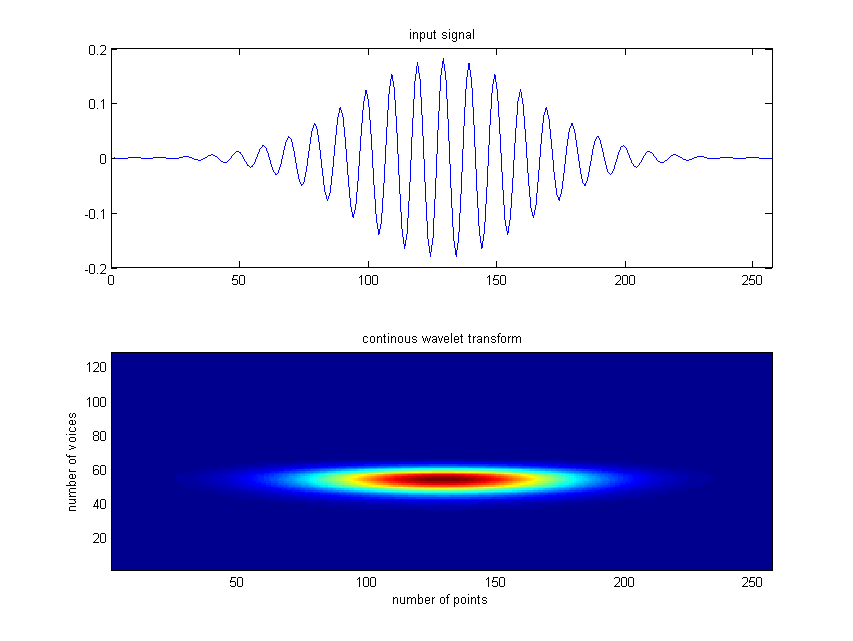
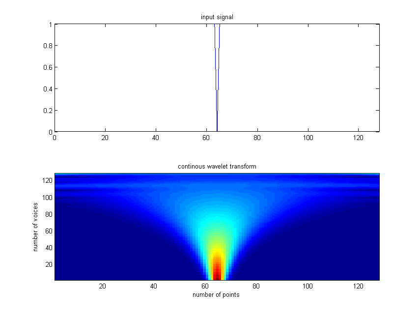

| FRACLAB Functions |
|
Computes the Continous Wavelet Transform of a 1D signal
WT = contwt(x,bounds,voices)
WT = contwt(...,'Wavelet type') or contwt(...,'Wavelet type',wave)
WT = contwt(...,'Mirroring')
WT = contwt(...,'Norm')
WT = contwt(x,bounds,voices) Computes the continous wavelet transform, WT of the input signal x, using the Mexican Hat wavelet. The parameter bounds is a 2 elements vector, [fmin,fmax], fmin and fmax are real values in (0:0.5) which represent the lower and upper bound frequencies where the analyzis is performed. The parameter voices is a positive integer which represents the number of scales computed between fmin and fmax frequencies.
|
The output structure |
WT = contwt(...,'Wavelet type') or WT = contwt(...,'Wavelet type',wave) Computes the continous wavelet transform, WT, using a specific type of wavelet. The Wavelet Type can be choosen from the list below :
| Specifier | Wavelet Type |
|---|---|
| 'mexican' | Mexican Hat (default) |
| 'morletr' | Real Morlet |
| 'morleta' | Analytic Morlet |
WT = contwt(...,'Mirroring') Computes the continous wavelet transform, WT, using a specific mirroring option. The supported options can be choosen from the list below :
| Specifier | Mirroring Type |
|---|---|
| 'nomirror' | Compute WT without mirroring the input signal (default) |
| 'mirror' | Compute WT mirroring the input signal |
WT = contwt(...,'Norm') Computes the continous wavelet transform, WT, using a specific normalization. The supported Norms can be choosen from the list below :
| Specifier | Normalization Type |
|---|---|
| 'L2' | Compute WT with an L2 normalization (default) |
| 'L1' | Compute WT with an L1 normalization |
x = Frac_morlet(0.1,128);
wtx = contwt(x,[0.01,0.5],128,'morleta',8);
figure; subplot(2,1,1);
plot(x); xlim([0 length(x)]); title('input signal');
subplot(2,1,2);
pcolor(abs(wtx.coeff)); shading 'flat';
title('continous wavelet transform');

x = ones(1,128); x(64) = 0;
wtx = contwt(x,[2^(-6),0.5],128,'morleta',8,'mirror');
figure; subplot(2,1,1);
plot(x); xlim([0 length(x)]); title('input signal');
subplot(2,1,2);
pcolor(abs(wtx.coeff)); shading 'flat';
title('continous wavelet transform');

| |
boxdim_listepoints | cropormask | |